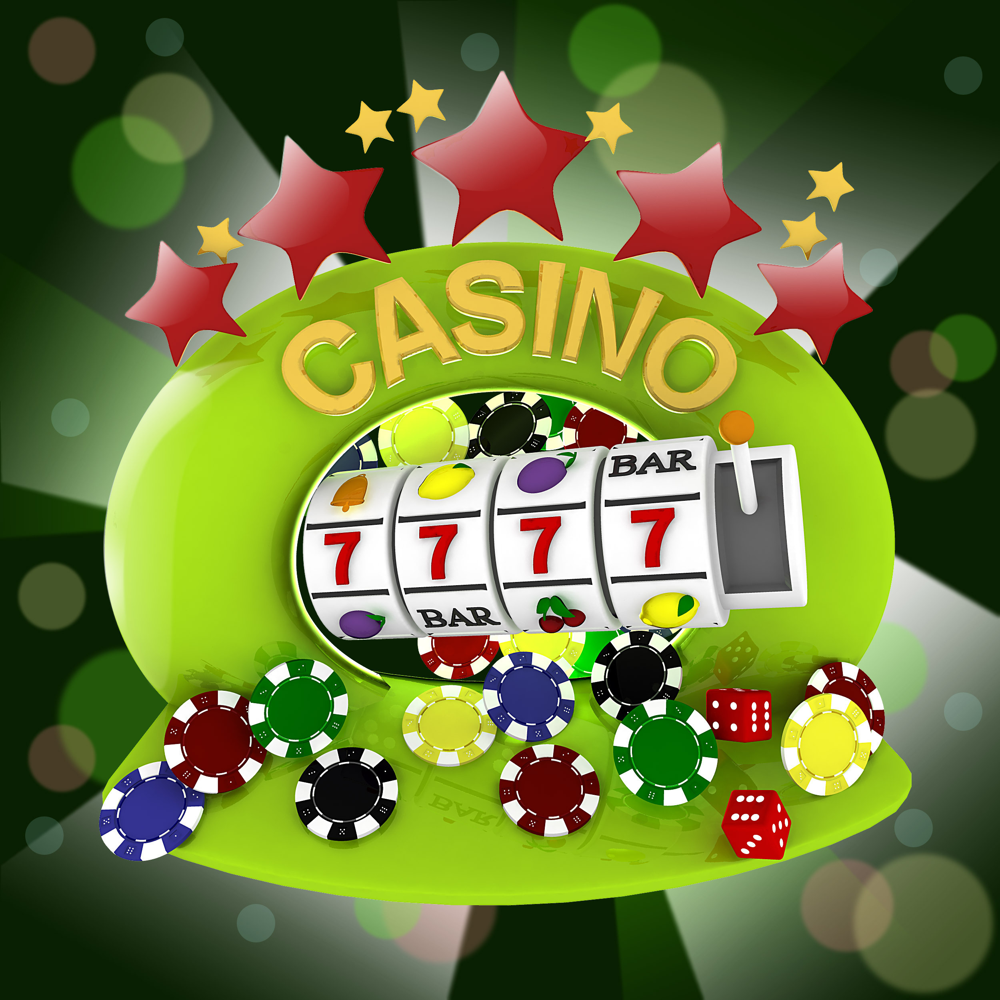

Join FlutterClub and get your 1 BTC / X XRP / X RADAR Casino Welcome Bonus Package Now!
- Make a first deposit of 0.05 BTC / 1,500 XRP / 2.25 RADR or more and you will automatically receive a 100% bonus up to 0.35 BTC / 10,500 XRP / 15.75 RADR. That means if you decide to deposit 0.35 BTC / 10,500 XRP / 15.75 RADR then you’ll have 0.7 BTC / 21,000XRP / 31.50 RADR to play with!
- We don’t stop there at FlutterClub - make a second deposit of 0.05 BTC / 1,500 XRP / 2.25 RADR or more. We’ll give you a 25% bonus up to 0.4 BTC / 12,000 XRP / 18 RADR (deposit 1.6 BTC / 48,000 XRP / 72 RADR to make the most of this) to help make your money go further.
- To top it off, when you make a third deposit of 0.05 BTC / 1,500 XRP / 2.25 RADR or more into your account, we’ll give you another whopping 50% bonus up to 0.25 BTC / 7,500 XRP / 11.25 RADR. Deposit 0.5 BTC / 15,000 XRP / 22.5 RADR to earn the full whack!